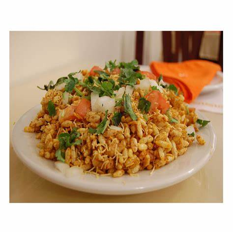
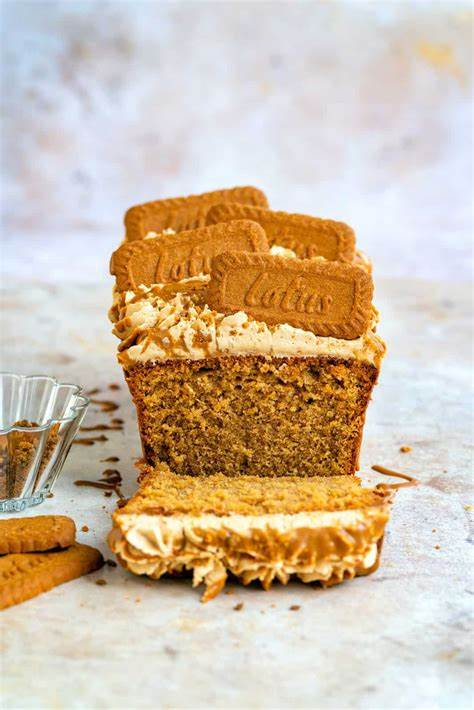

1. First, measure 1 cup of gram flour (besan) and pour it into a mixing bowl. Replace gram flour with chickpea flour if you do not have it.top shot of gram flour in mixing bowl
2. Next, add in your chopped veggies and herbs. It’s important to make sure all of these ingredients are FINELY chopped, otherwise, it becomes difficult to spread the chilla in the pan.
3. Then it is time to mix in the spices, including 2 to 3 pinches of turmeric powder, ½ teaspoon carom seeds (ajwain) and ¼ teaspoon red chili powder. Also add salt as per your liking at this step.
Note: If needed, you can substitute cumin seeds in this besan chilla recipe if you do not have carom seeds or omit them completely. Carom seeds help in digestion and also give a good flavor to the chilla.4. Before you start to stir or combine your ingredients, first add half a cup of water to the besan cheela mixture.
5. Next use a wired whisk to combine all of the besan chilla ingredients. Then, add an additional 1 to 3 tablespoons of water, depending on the quality and texture of the besan.
6. Continue whisking until the batter has a smooth, flowing consistency. There shouldn’t be any lumps, so make sure to break those up while mixing the batter.
7. Finally, you can begin cooking your besan chilla! I use a tawa (flat, round-shaped pan) to cook my besan cheela, but you can also use any well seasoned frying pan or a cast iron skillet or a non-stick pan.
Whichever type of pan you’re using, heat it on a low to medium-low heat and ladle batter onto the center, much like making pancakes. If you’re using iron skillet or tawa or a steel frying pan, let the pan become medium-hot and spread a bit of oil on it before adding the batter. Take a ladle or ¼ to ⅓ of a measuring cup full of the batter and pour on the pan.8. Next, gently use the back of the ladle or measuring cup (if you have used one) to spread the batter. Make sure you are spreading the batter gently so that the chilla does not break.
9. Then continue to cook the chilla on a low to medium-low heat until the top begins to look cooked or you start seeing some air-pockets.
10. Additionally, you can drizzle oil (about ½ to 1 teaspoon) on the chilla at the edges and all around while it is cooking to help it not stick to the pan.
In fact for a crispy chilla, you need to add more oil on the pan or skillet before pouring the batter.11. Next continue to cook until the base gets light golden.
12. Then it’s time to flip your besan cheela and cook the other side.
13. Then continue cooking until you see golden spots on the besan chilla. Cook your besan chilla evenly and well. You can flip the chilla once or twice for even cooking.
14. Finally, fold your besan chilla and serve them while they’re hot! Continue to make all chilla this way. If you make a larger batch, then cook chilla on two pans or skillets.

